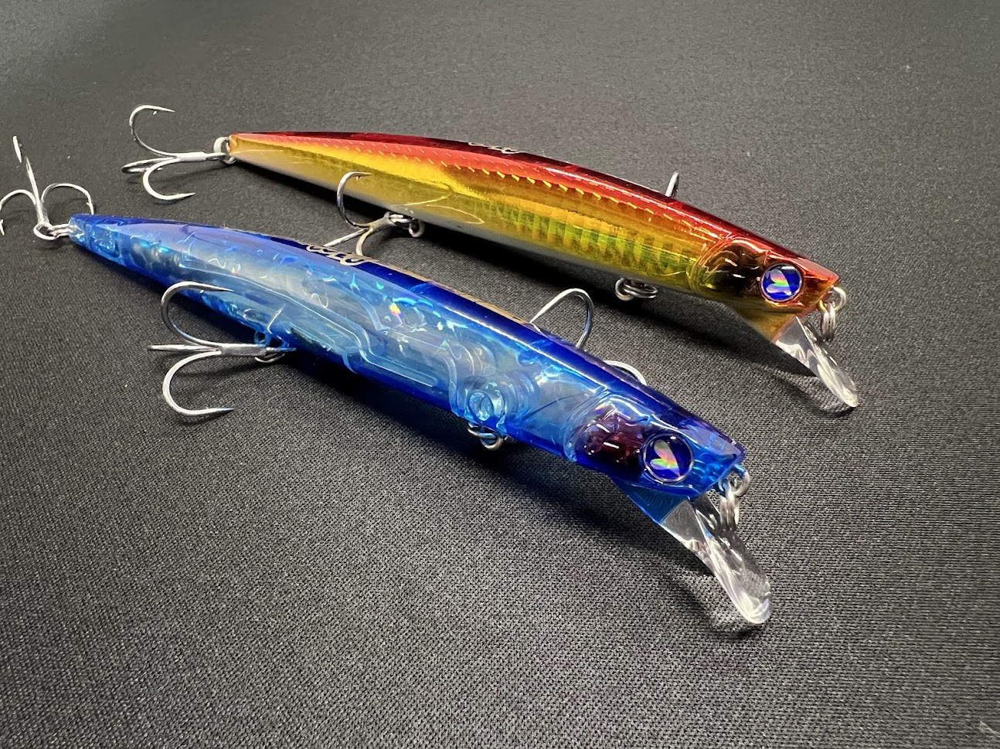
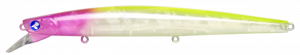
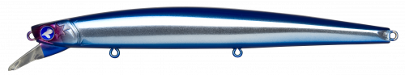
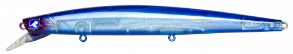

ブローウィン140S
かっとびミノーの名の通り飛距離とアクションの両立が魅力。

- メーカー
- BlueBlue（ブルーブルー）
- 長さ
- 140mm
- 重さ
- 23g
- タイプ
- スローシンキングミノー
- アクション
- ウォブンロール
- ターゲット
- シーバス
- 開発者
- 村岡昌憲
ブローウィン140Sの特徴・コンセプト
ブローウィン140Sは、BlueBlueを代表するミノーで、
細身のボディにはタングステンウェイトが内蔵されており、
強風下でも安定した飛距離とアクションを実現する設計が特徴です。
村岡昌憲氏が開発を手がけ、遠投性能とナチュラルな動きを両立。
河口やサーフ港湾など広範囲を効率よく探ることができます。
おすすめの使い方・状況
主な使用シーンは河口部や干潟などの流れが効く場所。
ゆっくり巻くとS字を書きながらウォブンロールします。
ナイトゲームやデイゲーム問わず安定した釣果を出せます。
飛距離を稼ぎたいサーフでも活躍します。
ワンポイント
投げてから一度ジャークを入れてウェイトを戻そう。
ウェイトを戻してからは姿勢が安定しており、
流れに合わせてドリフトするもよし、
ジャークでアクションするもよしです。
ただ巻きで十分にアクションしますが、
時折トゥイッチを加えることででる不規則な動きが効果抜群です。
人気カラー

ピンクチャートクリアテストカラーで爆釣！ブルーブルーで一番人気。

ブルーブルーブルーブルーの代表カラー。フラッシングが強く日中のアピール

ブルーブルークリア澄み潮や満月、ハイプレッシャーで。

マットチャート濁りのきつい時やナイトゲームでハイアピール。
画像出典:blueblue
実際の使用インプレッション
実際に使用してみると、横風や向かい風でも安定した飛距離と姿勢が良い。
ただ巻きでは良くも悪くも優等生なアクション。
blooowinの神髄は姿勢を崩さないジャーキングアクションだと思います。
初心者よりもシーバスが釣れ始めた中級者向けかも。
流れが強い場所でも姿勢が安定しており、ジャーキングもしやすいので、激流での使用は効果抜群。
姿勢の良さと飛距離を活かせる河口や大場所、サーフゲームにオススメです。
Blooowinシリーズ
blooowinはサイズラインナップが他にもたくさんあります。
- bloowin60S
トラウト/ライトゲームに
- bloowin80S
マイクロベイトパターンに
- bloowin110S
シーバスゲームの王道
- bloowin110J
イベント限定モデル
- bloowin125F-slim
使いやすいフローティングモデル
- bloowin140S
オリジナルモデル
- bloowin140J
青物用にジャーキングモデル
- bloowin165F-slim
ブローウィン最大級モデル
- bloowin167F-shallow
初のシャローモデル